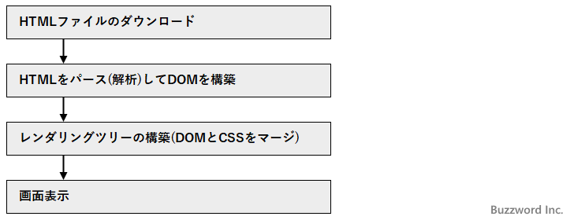
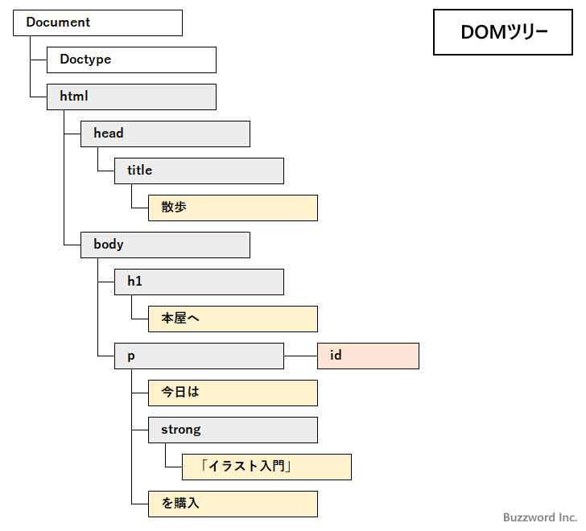

JavaScriptのコードをHTMLファイルのどこに記述するべきなのか
HTML ファイルの中で JavaScript のコードを記述する位置は、実行する JavaScript の目的や処理にかかる時間を考慮するとユーザーが快適にHTMLページを閲覧できる場合があります。例えば処理に時間がかかるコードはできるだけページの後ろの方に記述した方がいいですし、画面表示が行われるよりも前に実行しなければいけない処理は <head> タグ内に記述しなければならないかもしれません。ここでは JavaScript のコードをどこに記述するべきなのか、また記述する位置による注意点について解説します。
目次
HTMLファイルのダウンロードから画面表示までの流れ
最初にブラウザから Web ページへアクセスした場合に、どのような手順でブラウザの画面上に Web ページが表示されるのかについて簡単に確認します。

最初に Web サーバから HTML ファイルのダウンロードが行われます。ダウンロードが完了したら、 HTML ページに記述されている内容をパース(解析)して DOM ツリーと呼ばれるものを構築します。 DOM ツリーとは HTML ページの中のタグやテキストなどを階層構造で表したものです。( JavaScript では DOM の各ノードに対して色々な操作を行うことができます)。

DOM の構築とは別にスタイルシートのデータから CSSOM が構築されます。 DOM と CSSOM をマージしてレンダリングツリーが構築されます。最後に何を画面のどこに表示するのかなどの計算が行われてブラウザの画面に表示が行われます。
細かい点は省略していますが、簡単な流れとしてはこのような形になります。
そしてパース、レンダリングツリーの構築、画面表示、というステップは順番に完了してから次へ進むのではなく、ある程度の量のパースが完了したら残りのパースを待たずにスタイルとマージして画面に表示しつつ、残りのパースも継続するという処理が行われます。一画面で収まるような Web ページであればまとめて画面に表示されるように見えますが、非常に縦に長い情報量の多い Web ページでは準備ができたものから順に画面に表示されていくことになります。
JavaScriptのコードがHTMLページの中に記述されていた場合にどのように処理されるのか
HTML ページの中に <script> タグがあると、パースをいったん停止して <script> タグの中の JavaScript のコードが実行されます。
<p>こんにちは</p>
<script>
document.write("<p>お元気ですか？</p>");
</script>
<p>さようなら</p>
簡単な JavaScript のコードの場合はあまり気にされる必要はありませんが、コードの実行に何秒かかかってしまう場合、その間パースが停止するため結果的に <script> タグ以降の画面表示もその分遅くなってしまいます。
また JavaScript のコードが記述された外部ファイルを HTML ページから読み込んでいる場合、同じようにパースがいったん停止して外部ファイルの読み込みを行い、外部ファイルに記述された JavaScript のコードが実行されるまでパースが停止されます。そのため、インラインでコードを記述しているよりも、より多くの時間パースと画面表示が遅れてしまうことがあります(キャッシュなども関係してくるので一概には言えません)。
<p>こんにちは</p>
<script src="./sample.js"></script>
<p>さようなら</p>
ブラウザにページが表示されるのが遅くなるのはユーザー満足度の面からはあまり望ましいことではありません。そこでコードの内容的に記述する位置の制限がないのであれば、 JavaScript のコードはできる限り HTML ページの最後、例えば </body> タグの直前に記述することが望ましいと言われています。
<body>
・・・
・・・
・・・
<script src="./sample.js"></script>
</body>
最後に記述されていても <script> タグの時点で JavaScript のファイルの読み込みやコードの実行の間パースは止まりますが、 <script> タグ以降に他のタグがありませんので画面表示という面では影響がありません。
コードを実行するタイミングとコードの記述位置について
ではすべての <script> タグを最後に記述すればいいのかというとそうではありません。例えば HTML ページの画面表示が行われるよりも前に実行したい処理がある場合には、 </body> タグの最初や <head> タグ内などにコードを記述する必要があります。
<head>
<script src="./sample.js"></script>
</head>
<body>
・・・
・・・
・・・
</body>
また、まだパースが行われていないタグに対する操作を JavaScript のコードで実行することができません。例えばコードが記述されている位置よりも後ろに記述されているタグに対して値を設定しようとするとエラーになります。
次のサンプルを見てください。
<p>こんにちは</p>
<script>
let element = document.getElementById('target');
element.innerHTML = 'Good bye';
</script>
<p id="target">さようなら</p>
>> TypeError: Cannot set property 'innerHTML' of null
JavaScript のコードが実行された時点では、それよりも後のタグはまだパースが行われていないため、コードから参照することができません。その為、エラーが発生してしまいます。
この場合は、次のように JavaScript のコードを参照するタグよりもあとに記述する必要があります。
<p>こんにちは</p>
<p id="target">さようなら</p>
<script>
let element = document.getElementById('target');
element.innerHTML = 'Good bye';
</script>
このようにコードを実行するタイミングに何らかの条件がある場合には、それを考慮して HTML ページ内のどこに JavaScript のコードを記述するのかを決める必要があります。
-- --
今回は JavaScript のコードを同期で実行する場合に考慮すべき点について解説しました。他に <script> タグには defer または async の属性を設定することで非同期でコードを実行し、 HTML ページの表示と JavaScript の実行のタイミングを調整することができます。こちらについて「JavaScriptの外部ファイルを非同期で読み込む(async属性,defer属性)」を参照されてください。
-- --
JavaScript のコードをどこに記述するべきなのか、また記述する位置による注意点について解説しました。
( Written by Tatsuo Ikura )

著者 / TATSUO IKURA
初心者～中級者の方を対象としたプログラミング方法や開発環境の構築の解説を行うサイトの運営を行っています。